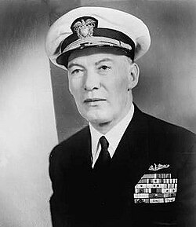

Roscoe Hillenkoetter
Admiral and first CIA director, 1897 to 1982

A Navy admiral who was the first director of the Central Intelligence Agency, from 1947 to 1950. After retiring, he sat on NICAP's board of governors from about 1957 to 1962; NICAP's director, Donald Keyhoe, was his Naval Academy classmate. 1
In 1960 he told Congress, as reported by The New York Times, that high-ranking Air Force officers were soberly concerned about UFOs, but that through secrecy and ridicule citizens were led to believe they were nonsense. His name later appeared as a signer of the forged Majestic 12 papers. 1
Open in the interactive Watcher
Related
- CIA First CIA director
- NICAP headquarters
- NICAP founded NICAP board
- Majestic 12 papers surface Named in the MJ-12 papers
Sources
- Roscoe H. Hillenkoetter Wikipedia